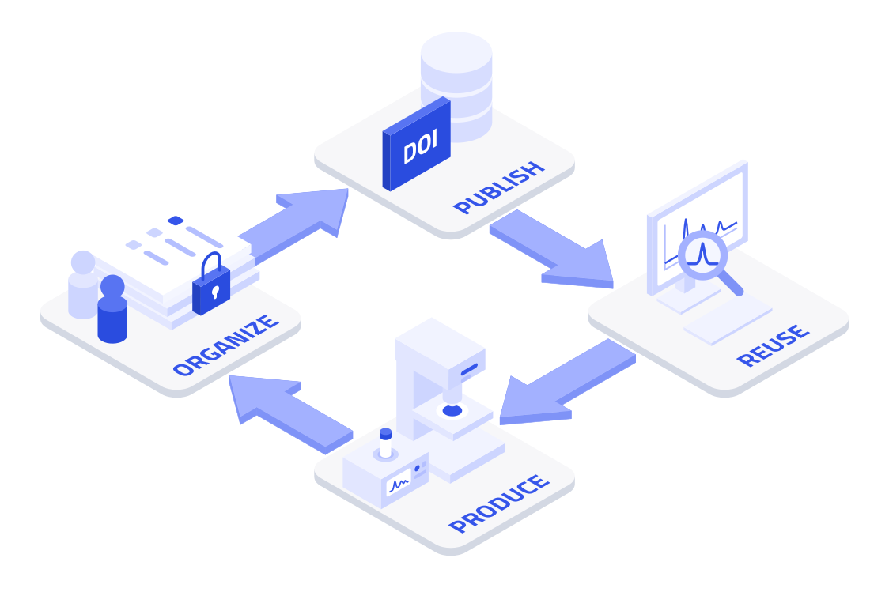

Structured by default
account_tree
Turn files into usable data
NOMAD keeps your original research files and extracts consistent, searchable metadata from recognized formats.
NOMAD helps researchers explore published results, organize files and structured data, collaborate on projects, and publish citable research. NOMAD Central is the free, public place to begin.

NOMAD adds structure and context without separating your data from the original files that produced it.
NOMAD keeps your original research files and extracts consistent, searchable metadata from recognized formats.
Develop a project with collaborators, control access while work is in progress, and decide when the result becomes public.
Connect files, structured entries, metadata, and an optional DOI in a research output that can be found and cited.
Use NOMAD when you generate research data, build on public results, or coordinate work with a team.
Bring together outputs from simulations, experiments, instruments, and electronic lab notebooks.
Search public results, inspect their provenance, analyze data collections in integrated notebooks, or download them for use in your own research.
Organize related work in projects, collaborate before publication, and share completed results.
NOMAD Central brings computational and experimental materials science data into one searchable service. Explore the public collection without an account and inspect both structured results and their original files.
Results from electronic-structure, atomistic, molecular dynamics, and workflow codes, normalized for comparison across sources.
Measurements, microscopy, spectroscopy, synthesis records, and other community-specific data captured with shared and domain-specific schemas.
Explore public data without an account, or sign in to organize, share, and publish your own research.
Search published computational and experimental data using structured scientific metadata.
Bring related files, structured entries, project information, and collaborators together.
Make a completed project findable and reusable while keeping control of when data become public.
Go beyond file processing with tools for structured experiment documentation and interactive analysis.
For needs beyond NOMAD Central, explore institutional Oasis deployments, plugin development, instrument automation with CAMELS, and examples in the NOMAD Gallery.